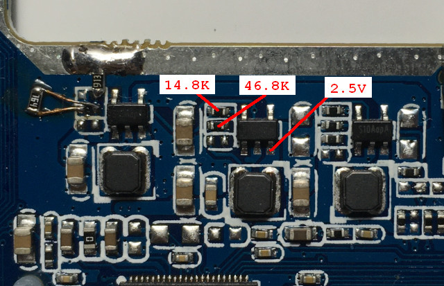
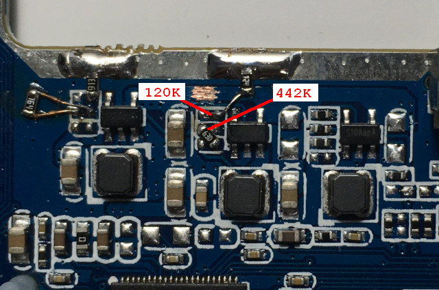
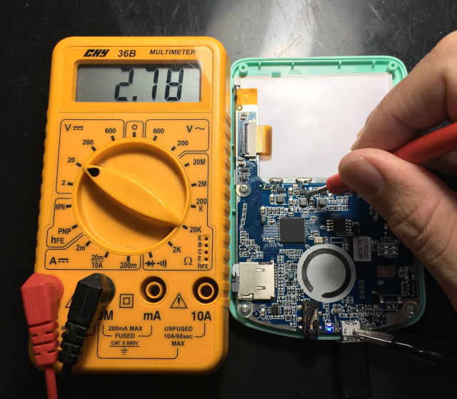
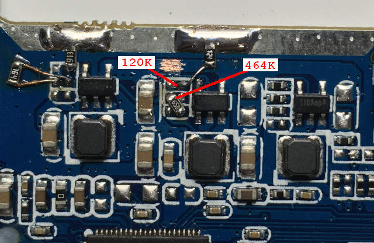
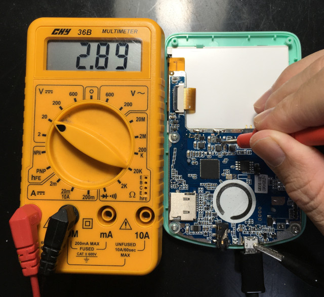
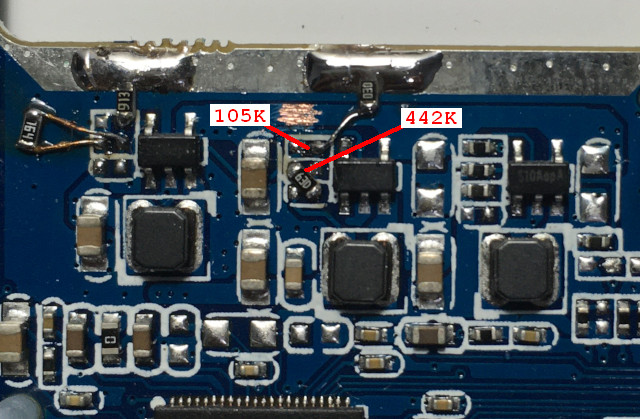
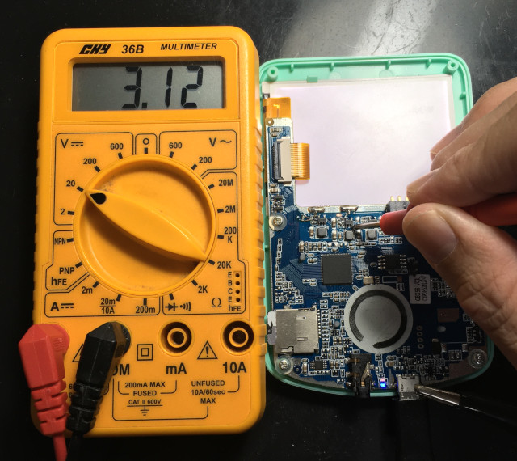

掌機 - Q8 - DRAM超頻
預設電阻是14.8K和46.8K，電壓輸出：2.5V

第1組測試登場，電阻120K搭配442K，電壓輸出：0.6 * (1 + (442K / 120K)) = 2.81V

實際測得電壓2.78V，F1C100S溫度正常，DRAM可以超頻到252MHz，可以開機進入系統

第2組測試登場，電阻120K搭配464K，電壓輸出：0.6 * (1 + (464K / 120K)) = 2.92V

實際測得電壓2.89V，F1C100S溫度正常，DRAM已經開始不穩定，即使降頻到240MHz，依然不穩定

第3組測試登場，電阻105K搭配442K，電壓輸出：0.6 * (1 + (442K / 105K)) = 3.13V

實際測得電壓3.12V，F1C100S溫度正常，DRAM已經無法工作
